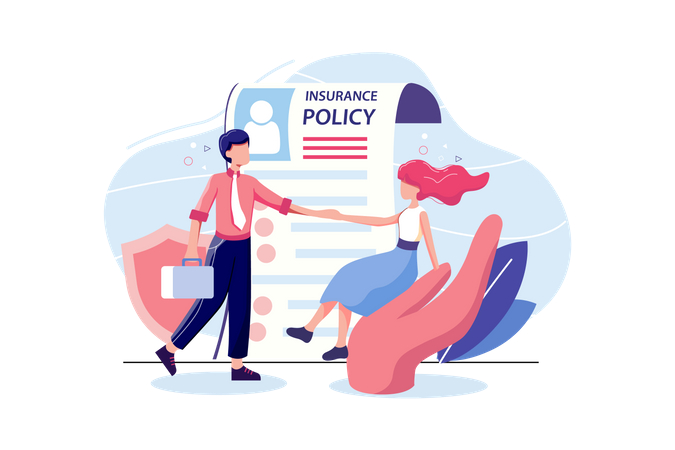
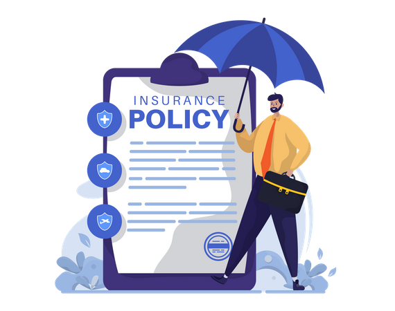

What is Insurance
Insurance is a means of protection from financial loss. It is a form of risk management, primarily used to hedge against the risk of a contingent or uncertain loss. An entity which provides insurance is known as an insurer, an insurance company, an insurance carrier or an underwriter. A person or entity who buys insurance is known as a policyholder, while a person or entity covered under the policy is called an insured. Policyholder and insured are often used as but are not necessarily synonyms, as coverage can sometimes extend to additional insureds who did not buy the insurance. The insurance transaction involves the policyholder assuming a guaranteed, known, and relatively small loss in the form of payment to the insurer in exchange for the insurer's promise to compensate the insured in the event of a covered loss. The loss may or may not be financial, but it must be reducible to financial terms, and usually involves something in which the insured has an insurable interest established by ownership, possession, or pre-existing relationship. The insured receives a contract, called the insurance policy, which details the conditions and circumstances under which the insurer will compensate the insured, or their designated beneficiary or assignee. The amount of money charged by the insurer to the policyholder for the coverage set forth in the insurance policy is called the premium. If the insured experiences a loss which is potentially covered by the insurance policy, the insured submits a claim to the insurer for processing by a claims adjuster. A mandatory out-of-pocket expense required by an insurance policy before an insurer will pay a claim is called a deductible (or if required by a health insurance policy, a copayment). The insurer may hedge its own risk by taking out reinsurance, whereby another insurance company agrees to carry some of the risks, especially if the primary insurer deems the risk too large for it to carry.
Life Insurance
Life insurance provides a monetary benefit to a decedent's family or other designated beneficiary, and may specifically provide for income to an insured person's family, burial, funeral and other final expenses. Life insurance policies often allow the option of having the proceeds paid to the beneficiary either in a lump sum cash payment or an annuity. In most states, a person cannot purchase a policy on another person without their knowledge. Annuities provide a stream of payments and are generally classified as insurance because they are issued by insurance companies, are regulated as insurance, and require the same kinds of actuarial and investment management expertise that life insurance requires. Annuities and pensions that pay a benefit for life are sometimes regarded as insurance against the possibility that a retiree will outlive his or her financial resources. In that sense, they are the complement of life insurance and, from an underwriting perspective, are the mirror image of life insurance. Certain life insurance contracts accumulate cash values, which may be taken by the insured if the policy is surrendered or which may be borrowed against. Some policies, such as annuities and endowment policies, are financial instruments to accumulate or liquidate wealth when it is needed. In many countries, such as the United States and the UK, the tax law provides that the interest on this cash value is not taxable under certain circumstances. This leads to widespread use of life insurance as a tax-efficient method of saving as well as protection in the event of early death. In the United States, the tax on interest income on life insurance policies and annuities is generally deferred. However, in some cases the benefit derived from tax deferral may be offset by a low return. This depends upon the insuring company, the type of policy and other variables (mortality, market return, etc.). Moreover, other income tax saving vehicles (e.g., IRAs, 401(k) plans, Roth IRAs) may be better alternatives for value accumulation.
Insurance financing vehicles
 Fraternal insurance is provided on a cooperative basis by fraternal benefit societies or other social organizations.[51] No-fault insurance is a type of insurance policy (typically automobile insurance) where insureds are indemnified by their own insurer regardless of fault in the incident. Protected self-insurance is an alternative risk financing mechanism in which an organization retains the mathematically calculated cost of risk within the organization and transfers the catastrophic risk with specific and aggregate limits to an insurer so the maximum total cost of the program is known. A properly designed and underwritten Protected Self-Insurance Program reduces and stabilizes the cost of insurance and provides valuable risk management information. Retrospectively rated insurance is a method of establishing a premium on large commercial accounts. The final premium is based on the insured's actual loss experience during the policy term, sometimes subject to a minimum and maximum premium, with the final premium determined by a formula. Under this plan, the current year's premium is based partially (or wholly) on the current year's losses, although the premium adjustments may take months or years beyond the current year's expiration date. The rating formula is guaranteed in the insurance contract. Formula: retrospective premium = converted loss + basic premium × tax multiplier. Numerous variations of this formula have been developed and are in use. Formal self-insurance (active risk retention) is the deliberate decision to pay for otherwise insurable losses out of one's own money.[52] This can be done on a formal basis by establishing a separate fund into which funds are deposited on a periodic basis, or by simply forgoing the purchase of available insurance and paying out-of-pocket. Self-insurance is usually used to pay for high-frequency, low-severity losses.[53] Such losses, if covered by conventional insurance, mean having to pay a premium that includes loadings for the company's general expenses, cost of putting the policy on the books, acquisition expenses, premium taxes, and contingencies. While this is true for all insurance, for small, frequent losses the transaction costs may exceed the benefit of volatility reduction that insurance otherwise affords.[53] Reinsurance is a type of insurance purchased by insurance companies or self-insured employers to protect against unexpected losses. Financial reinsurance is a form of reinsurance that is primarily used for capital management rather than to transfer insurance risk. Social insurance can be many things to many people in many countries. But a summary of its essence is that it is a collection of insurance coverages (including components of life insurance, disability income insurance, unemployment insurance, health insurance, and others), plus retirement savings, that requires participation by all citizens. By forcing everyone in society to be a policyholder and pay premiums, it ensures that everyone can become a claimant when or if they need to. Along the way, this inevitably becomes related to other concepts such as the justice system and the welfare state. This is a large, complicated topic that engenders tremendous debate, which can be further studied in the following articles (and others): National Insurance Social safety net Social security Social Security debate (United States) Social Security (United States) Social welfare provision Stop-loss insurance provides protection against catastrophic or unpredictable losses. It is purchased by organizations who do not want to assume 100% of the liability for losses arising from the plans. Under a stop-loss policy, the insurance company becomes liable for losses that exceed certain limits called deductibles.
eInsurance Account – Open yours today!

Opening an eInsurance Account (eIA) is the first step to powering your insurance policies. Once you have an eIA, you can buy and keep all your insurance policies from any insurer in electronic mode. You need to have only one eIA for all your policies and it comes with an unique eInsurance Account number. Each eInsurance account holder will get an unique Login ID and Password to access his account and electronic policy details online at www.camsrepository.com – so you can view your policy details any time! You can pay premium for all your Insurance policies online and even log in service requests and complaints, if you have any. If you already have insurance policies, you can convert your existing policies into electronic mode by submitting a request for conversion along with the application for opening an eIA. If you are planning to buy a new insurance policy any time soon, it’s best to open an eIA at the same time and opt for an electronic policy. Once you have an eIA, your documentation for buying a policy will be much simpler. So even if you are undecided about your policy, you can still open an eIA and quote your eIA number when you decide to buy a new policy! Open your eIA with CAMSRep, an Insurance Repository Service Provider approved by IRDA, the Insurance Regulator. Your policies remain safe and secure in our repository - so you have the peace of mind that you always desired! Download an eIA opening form now or you can fill out an application online! That’s not all!! Opening and maintaining an eInsurance Account is absolutely FREE ( No fine prints , no shocks !! ) So, what are you waiting for? Open an eInsurance Account Now! And discover a whole new world of insurance policy service!
Importance of Insurance
The world we live in is full of uncertainties and risks. Individuals, families, businesses, properties and assets are exposed to different types and levels of risks. These include risk of losses of life, health, assets, property, etc. While it is not always possible to prevent unwanted events from occurring, financial world has developed products that protect individuals and businesses against such losses by compensating them with financial resources. Insurance is a financial product that reduces or eliminates the cost of loss or effect of loss caused by different types of risks. Apart from protecting individuals and businesses from many kinds of potential risks, the Insurance sector contributes significantly to the general economic growth of the nation by providing stability to the functioning of businesses and generating long-term financial resources for the industrial projects. Among other things, Insurance sector also encourages the virtue of savings among individuals and generates employments for millions, especially in a country like India, where savings and employment are important.
We are there to help you when you are in need